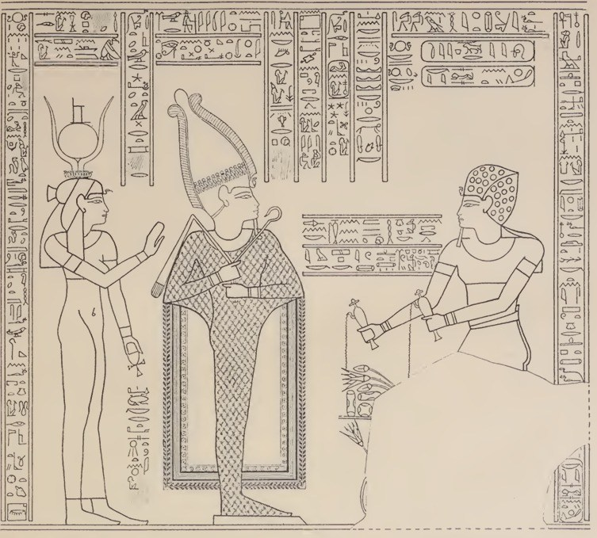
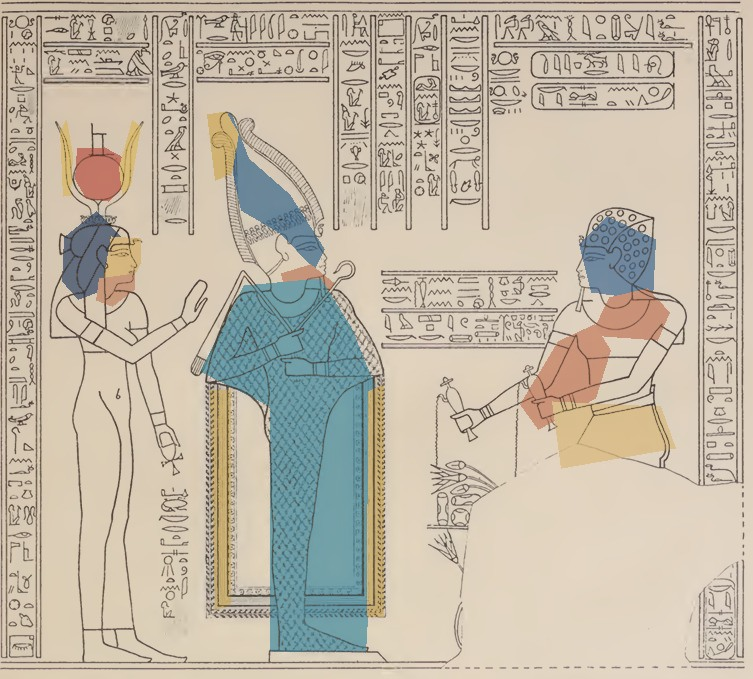
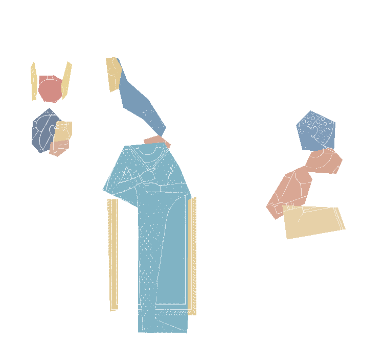
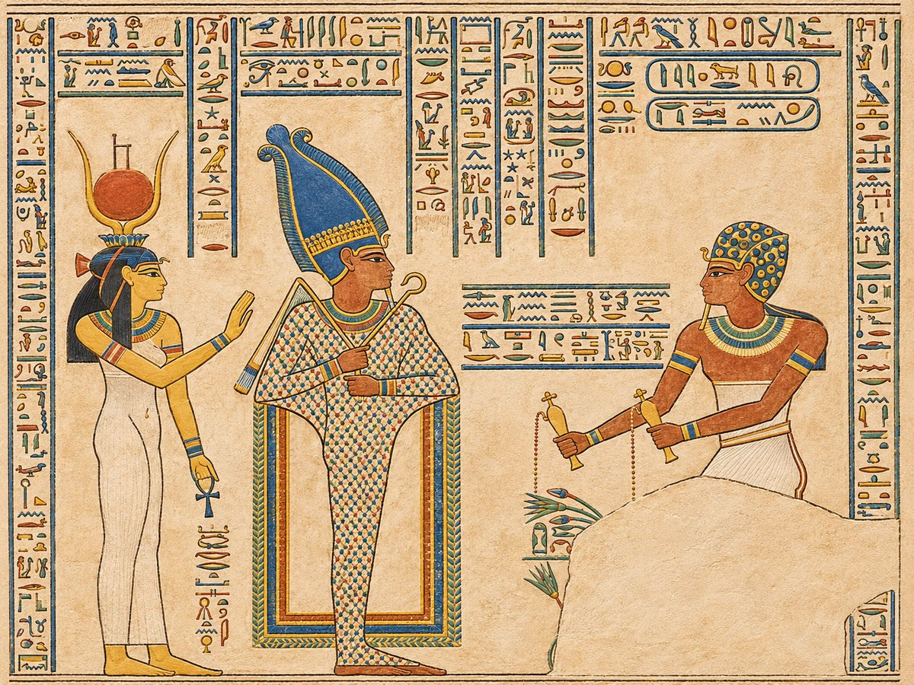

𓎛 𓋹 𓂀
جهّز صورة المرجع
صورة واضحة للنقش الحقيقي، مع طبقة تلوين PNG بنفس أبعاده، ثم ملف targets.mind.
تجربة تفاعلية للتراث المصري01 / 04
وجّه كاميرا هاتفك إلى نقش أثري، وشاهد تصورًا رقميًا لترميم ألوانه يظهر في مكانه. تعرّف على الشخصيات والرموز واستكشف حكاية المشهد.


المجموعة الرقمية / 01
اختر مشهدًا، وشاهد الرسم الأصلي والتصور الملون والتلوين المتطابق معه هندسيًا.


عناصر التاج في الرسوم المصرية تحمل دلالات دينية وملكية، لكن تحديد نوعه هنا يحتاج مراجعة الأثر الأصلي.
من المتصفح إلى المعبد / 02
لا تحتاج تثبيت تطبيق. يكفي رابط HTTPS وإذن الكاميرا.
صورة واضحة للنقش الحقيقي، مع طبقة تلوين PNG بنفس أبعاده، ثم ملف targets.mind.
افتح الموقع على الموبايل، وافق على الكاميرا، ووجّهها نحو الرسم المرجعي أو الجدار.
تظهر طبقة ملونة مثبتة على الصورة، ويمكنك إخفاؤها أو إظهارها تدريجيًا واستماع للشرح.
YOUR JOURNEY STARTS HERE
جرّب تعرّف الكاميرا على صورة MindAR جاهزة أولًا، أو جهّز ملف التعرف الخاص بنقوشك.